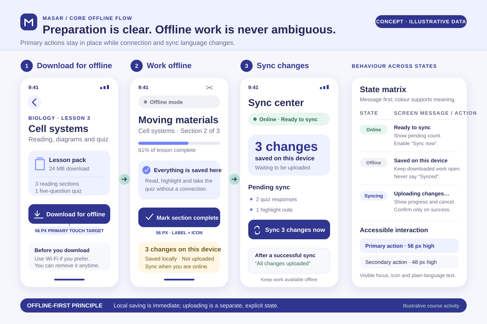

Concept Project · Self-initiated
Masar
A study plan that stays understandable when the connection does not.

The design brief
Masar explores how a learner with intermittent connectivity might download a weekly plan, continue working locally, and understand which changes still need to synchronize.
The concept deliberately avoids trying to become a complete learning-management system. Its core job is narrower: make continuity and status clear across changes in connectivity.
No client, learners, teachers, research sessions, downloads, learning outcomes, or adoption are claimed. Course names, progress, and messages in the screens are illustrative.
Source-informed observations
The web.dev Offline UX guidelines recommend informing people promptly when connection state changes, using plain language, making cached content visible, and supporting offline actions or clear save-for-offline choices.
WCAG’s status-message guidance adds an accessibility requirement: important updates should be communicated without unexpectedly moving focus. Together, these references shift the concept from a simple offline banner toward a visible state model.
Assumptions
- A learner already has a weekly plan; Masar does not need to author the curriculum.
- Selected lessons can be stored locally on the learner’s device.
- Progress made offline can be queued, but conflicts may still require a clear resolution.
- Download size, recency, and sync state matter as much as the visual completeness of a lesson card.
These are working assumptions used to shape the design, not findings from user research.
Proposed experience
Downloaded is a visible content state
Lesson cards distinguish available-online from available-offline content, so a learner does not have to discover availability after losing connectivity.
Local progress remains legitimate
The interface says when work is saved on the device instead of implying that every completed action has already reached a server.
Sync is a reviewable queue
A sync center groups pending changes, current activity, and failures. It provides a next action without treating every offline moment as an error.
Flow & state system
The second proof sheet connects the main flow—download, work offline, synchronize—with the visual language for online, offline, and syncing states.

Accessibility & content choices
- Use text and icons together; never rely on a colored dot alone for sync state.
- Announce completed downloads and sync results through appropriate status regions.
- Keep download, retry, and lesson actions comfortably touchable.
- Use direct language such as “Saved on this device” rather than technical synchronization jargon.
- Preserve the learner’s place when connectivity changes; do not unexpectedly navigate or move focus.
What to validate next
A future research round should test whether learners understand the difference between downloaded, saved locally, and synchronized. It should also examine download-size comprehension, conflict recovery, and whether the sync center creates unnecessary anxiety.
Until that happens, the screens remain a reasoned design proposal rather than evidence of usability.
Research & Design References
These sources informed interaction principles. They did not provide users, validation, or product-outcome data for Masar.
- web.dev — Offline UX design guidelinesConnection-state communication and offline actions
- W3C — Understanding Status MessagesAccessible feedback without focus changes
- Android — Build an offline-first appLocal-data and offline-first architecture background